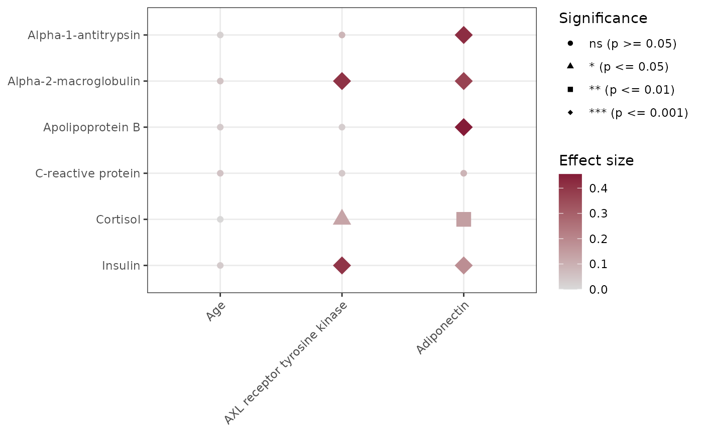

Generate a matrix of statistical relationships between variables.
Usage
PlotMiningMatrix(
data,
outcome_vars,
predictor_vars = NULL,
covariates = NULL,
Relabel = TRUE,
TreatOrdinalAs = "Categorical",
Parametric = TRUE,
Data = lifecycle::deprecated(),
OutcomeVars = lifecycle::deprecated(),
PredictorVars = lifecycle::deprecated(),
fdr_scope = c("matrix", "per_outcome", "per_predictor"),
Covariates = lifecycle::deprecated()
)Arguments
- data
A data frame.
- outcome_vars
Outcome variables.
- predictor_vars
Predictor variables. If NULL, uses OutcomeVars.
- covariates
Optional covariates (reserved for future use).
- Relabel
Use labels instead of names.
- TreatOrdinalAs
How ordinal variables are handled:
"Categorical","Continuous","Both", or"Exclude".- Parametric
Use parametric tests.
- Data
Deprecated (since 19.15.0). Use
datainstead.- OutcomeVars
Deprecated (since 19.15.0). Use
outcome_varsinstead.- PredictorVars
Deprecated (since 19.15.0). Use
predictor_varsinstead.- fdr_scope
Either
"matrix"(default) or"per_outcome", passed toApplyFDRCorrection()."matrix"corrects across all pairwise p-values at once (historical behavior, computed on the symmetrized pair table)."per_outcome"corrects separately within each x-axis variable (XVar, ordered byoutcome_vars).- Covariates
Deprecated (since 19.15.0). Use
covariatesinstead.
Examples
data(SampleData)
data(SampleVariableTypes)
# Attach labels and factor levels for readable axes
Labelled <- RevalueData(SampleData, SampleVariableTypes)$RevaluedData
# A mining matrix over 11 mixed-type variables (categorical + continuous)
result <- PlotMiningMatrix(
Labelled,
outcome_vars = c("Diagnosis", "sex", "age", "AXL", "Adiponectin"),
predictor_vars = c("Alpha_1_Antitrypsin", "Alpha_2_Macroglobulin",
"Apolipoprotein_B", "C_Reactive_Protein",
"Cortisol", "Insulin")
)
# The relationship plot (point shape/size encode significance from raw p)
result$Unadjusted$plot

# The p-value table carries both unadjusted (p) and FDR-adjusted (p_adj)
# p-values so results can be inspected with and without FDR correction
result$Unadjusted$PvalTable[, c("XVar", "YVar", "p", "p_adj", "Test")]
#> # A tibble: 18 × 5
#> XVar YVar p p_adj Test
#> <chr> <chr> <dbl> <dbl> <chr>
#> 1 AXL Alpha_1_Antitrypsin 1.12e- 1 2.01e- 1 Correlation
#> 2 AXL Alpha_2_Macroglobulin 8.35e-15 5.01e-14 Correlation
#> 3 AXL Apolipoprotein_B 6.02e- 1 6.78e- 1 Correlation
#> 4 AXL C_Reactive_Protein 4.82e- 1 6.58e- 1 Correlation
#> 5 AXL Cortisol 1.85e- 2 4.15e- 2 Correlation
#> 6 AXL Insulin 2.29e-14 1.03e-13 Correlation
#> 7 Adiponectin Alpha_1_Antitrypsin 1.21e-15 1.09e-14 Correlation
#> 8 Adiponectin Alpha_2_Macroglobulin 3.24e-12 1.17e-11 Correlation
#> 9 Adiponectin Apolipoprotein_B 2.00e-18 3.60e-17 Correlation
#> 10 Adiponectin C_Reactive_Protein 1.02e- 1 2.01e- 1 Correlation
#> 11 Adiponectin Cortisol 9.14e- 3 2.35e- 2 Correlation
#> 12 Adiponectin Insulin 7.08e- 4 2.12e- 3 Correlation
#> 13 age Alpha_1_Antitrypsin 7.17e- 1 7.60e- 1 Correlation
#> 14 age Alpha_2_Macroglobulin 3.58e- 1 5.36e- 1 Correlation
#> 15 age Apolipoprotein_B 5.25e- 1 6.58e- 1 Correlation
#> 16 age C_Reactive_Protein 3.49e- 1 5.36e- 1 Correlation
#> 17 age Cortisol 9.60e- 1 9.60e- 1 Correlation
#> 18 age Insulin 5.48e- 1 6.58e- 1 Correlation
# Per-outcome FDR correction instead of matrix-wide
result_perout <- PlotMiningMatrix(
Labelled,
outcome_vars = c("Diagnosis", "sex", "age", "AXL", "Adiponectin"),
predictor_vars = c("Alpha_1_Antitrypsin", "Alpha_2_Macroglobulin",
"Apolipoprotein_B", "C_Reactive_Protein",
"Cortisol", "Insulin"),
fdr_scope = "per_outcome"
)
# An interactive version of the matrix
if (requireNamespace("plotly", quietly = TRUE)) {
plotly::ggplotly(result$Unadjusted$plot)
}